Confounding Tools: Poster
Brainstorm
Poster Theme:
Life Under COVID-19
Pixel Art Theme intrigues me, and if I were to hang up a poster in my plain white room I think a pixel art poster would be like a cool, blocky colour palette image to stick on my wall.
Rough Sketches


Option #1:
Showcasing how excessive my screen time has been due to the pandemic - thoughts, information being consumed, interests and activities, etc.
What I Hope to Portray/Convey:
Spending the majority of my days isolated from the world in my bedroom, relying on my electronic devices to keep me entertained. My days have been occupied by streaming content from Netflix and Prime Video, listening to music, collecting vinyl records, retail therapy, etc. Maybe try to tie how it impacted my mental health, getting in touch with nostalgic things that bring me comfort, exploring positives and negatives.
I hope to visually present myself or my devices in this poster as the focal point in the composition (big, close up, central position or use the rule of thirds?). Devices surrounded by the wide variety of content and info I have consumed. Maybe desaturate the colours to give it an almost mono/somber tone and enhance the negative effect of too much isolation played during my university experience.
Possible Tools to Use/Experiment:
- Unsplash (royalty-free images)
- Screenshots of apps and websites (Twitter, Instagram, Spotify, Netflix, Prime Video, etc.)
- Notes App (draw and type)
- Google Drawings or Snapchat to compose the images into a composition
- Nintendo 3DS games (pixel art aesthetic - specifically from a game I used to play as a kid though the colour palette may be too bright and upbeat which is the opposite of what I want to convey).
- Image to Pixel convertor? Or find a pixel filter on Instagram?
Option #2:
Showcasing my experience of working during a pandemic.
What I Hope to Portray/Convey:
I work in a retail environment and want to try to either convey my daily routine (uniform, COVID protocols, atmosphere, etc.) or feature a mannequin as a relatable object - idle, overlooked, lonely figure that relates to how I've felt during this pandemic.
I hope to visually present myself or an image of a mannequin in this poster as a central, relatable figure in the composition, accenting the setting of my retail environment. Make the colours more dull/unsaturated to evoke the distressing impact that COVID has done to retail environments, and represent emotions of stress, doubt, and fear I've experienced during this unsure time.
Possible Tools to Use/Experiment:
- Unsplash (royalty-free images), iPhone camera
- Screenshots of apps and websites (Twitter, Instagram, Spotify, Netflix, Prime Video, etc.)
- Notes App (draw and type)
- Google Drawings or Snapchat to compose the images into a composition
- Image to Pixel convertor? Or find a pixel filter on Instagram?
Option #3:
Combining Option #1 and #2?
Showcasing a hybrid of the aspect of isolation at home and the somewhat disconnected feeling of working retail in a pandemic.
First Draft
Settled With Option #3
I browsed through Unsplash to find certain images that related to what I wanted to convey - e.g images of a girl sitting alone at home, clothing/department stores, devices, home office setups, mannequins, etc. I managed to find a pixelated filter on Instagram to give the images a pixelated effect. The method that works for me right now to compose/layout the images is Google Drawings to really make sure the canvas is set to 24x36 inches.
I think the first and second images are strong contenders because it shows the contrast of my life affected by this pandemic - spending days in isolation by myself vs. the busy bustling retail environment where I still feel detached from the world and lonely like a mannequin. I also think the colour palette between these two images works well to evoke a dark and moody tone, with the help of a pixelated Instagram filter. Both posters split in the middle showing two halves.
* After testing out adding the miscellaneous screenshots or pixelated text bubbles that I prefer the simplicity of the two images side by side without any other elements obstructing it and feeling forced to have to add something to try and make the intent clear. It seemed too odd to place anything else over it.
* The tight/compact feeling of the portrait layout creates a strong, contrasting image that really draws the eye in especially to the dark mannequin - literally feeling like the two figures are almost touching back to back. The mannequin's head is slightly higher than the girl sitting - meant to have it aligned but was tricky laying it out on Google Drawings.
* The openness of the landscape image, due to the negative space, feels airy and the figures are surrounded by a huge grey area - a void of loneliness and it makes the figures feel small against the world. I like that the heads are lined up evenly.
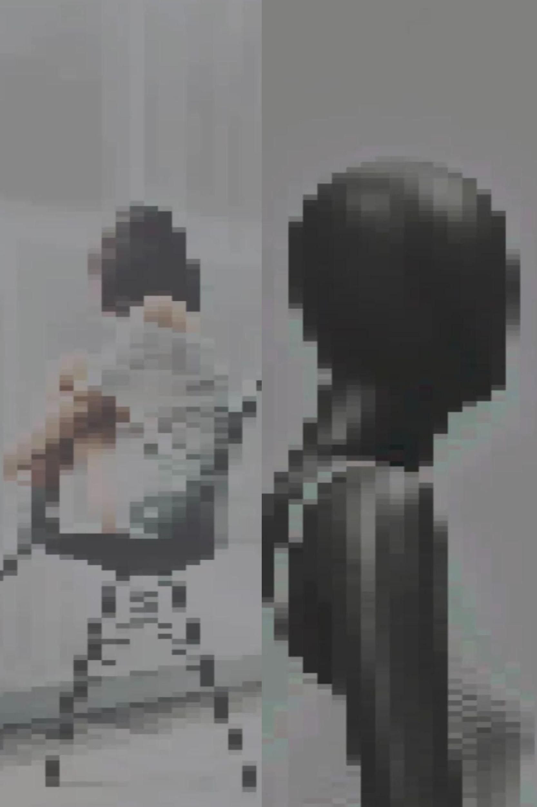
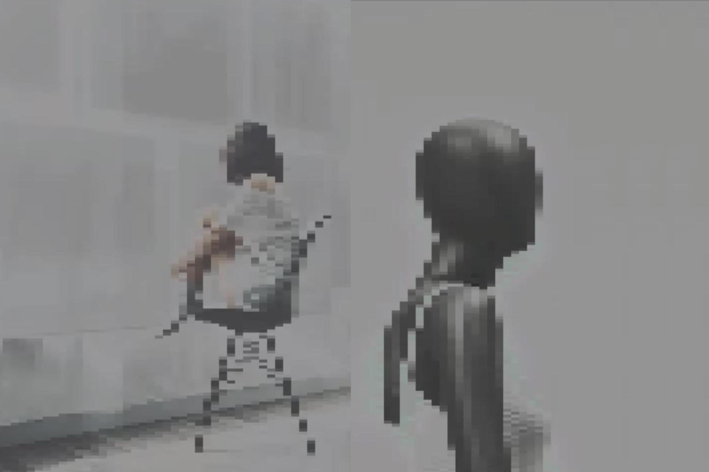
An interesting mannequin image found on Unsplash. Thought it would work but the yellowish tinge on the dress and image itself did not seamlessly work together in terms of the colour palette.
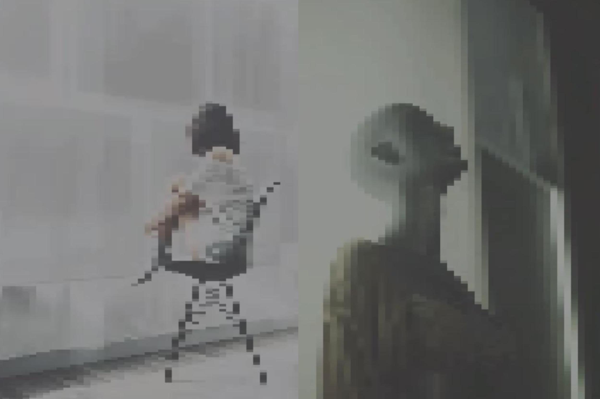
I was thinking of adding pixelated bubble texts onto the poster but am thinking that it may look a bit odd/mismatched over the image and am thinking of whether I should include text in this aspect or make the text bubbles pixelated with the filter so it's not legible but evokes the chaos of thoughts, activities in isolation.
.png)
.png) 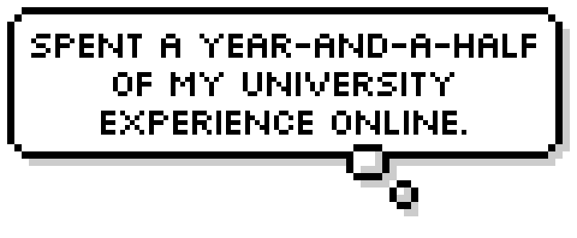
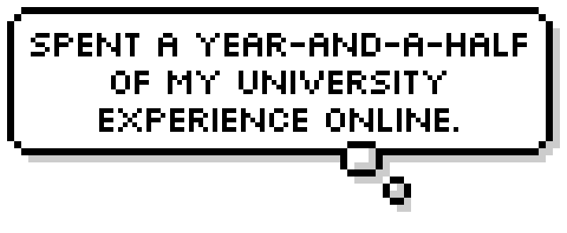
Kept layering the pixelated Instagram filter over and over and found that it made the image darker and more blurry.
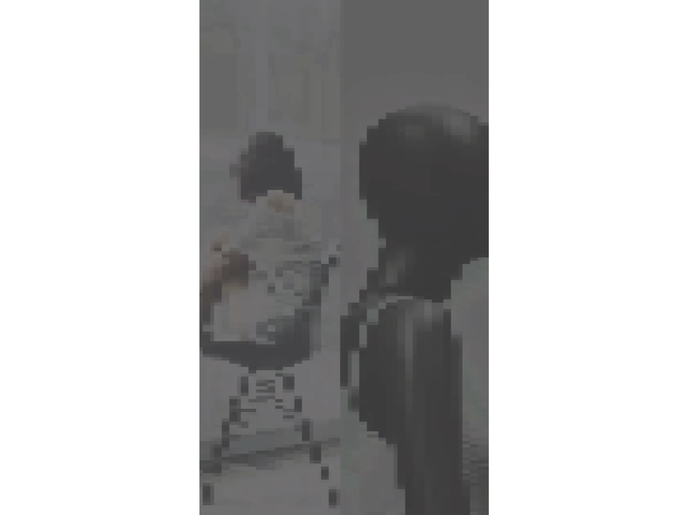
The process of laying out images on Google Drawings and then using an Instagram filter on top that makes it pixelated and desaturated.
* In this example, for the theme of Option #1 I used images of a computer in bed from Unsplash with screenshots of images of apps I use, shows I've watched, music I listen to, online shopping. Though, I felt the composition was too messy and wasn't visually balanced or cohesive.
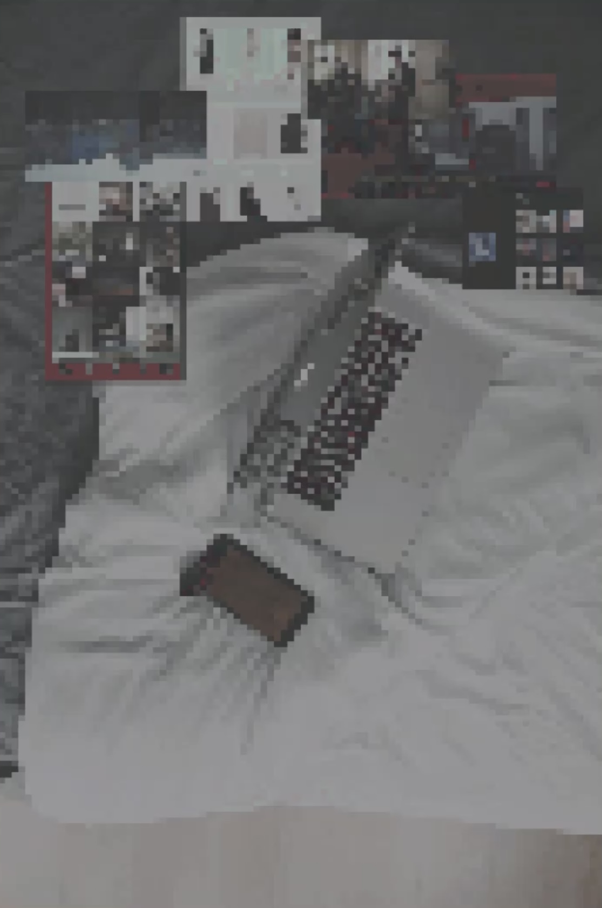
* Same for the theme of Option #3, used the girl sitting and mannequin images from Unsplash with the miscellaneous screenshots that represents my online distractions in isolation and again the composition felt really unbalanced and too top heavy. There are two versions of the pixelated filter made by one Instagram creator that either makes it bright or dark with the pixelization.
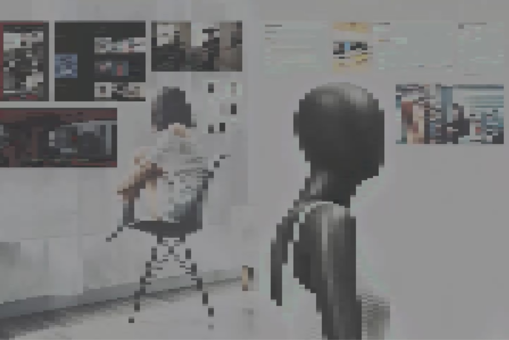
* Preferred the darker, desaturated filter "pixel gloom" over the brighter, overexposed filter to project the bleak and unhappy mood.
* Also had to tweak the exposure, shadows, black point, and contrast for some photos in the iPhone camera app because if certain spots were too dark/black the filter would make that area noticeably red.
Thought it would be interesting to try and showcase how I look at home vs. how I look at work. Took two separate images of myself in the appropriate attire I want to convey and split them in half, aligned them in Google Drawings to create one whole figure.
* In the right image I forgot to wear my mask, which is part of my uniform.
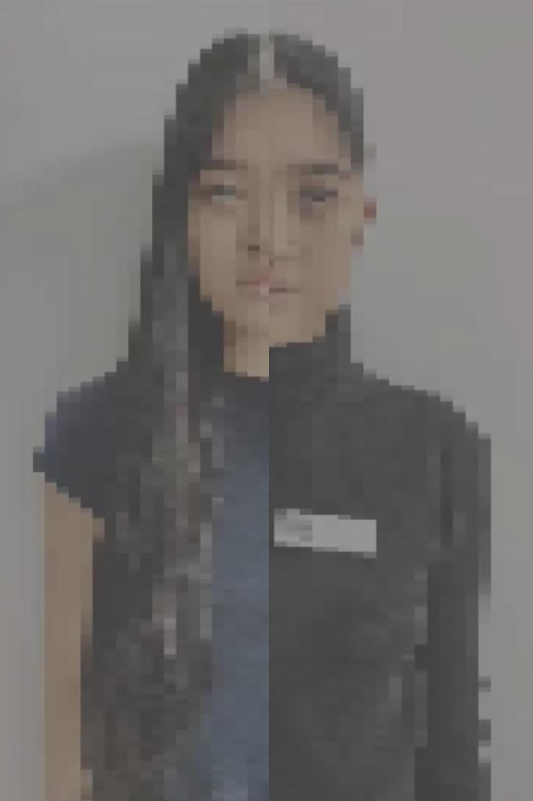
Testing Option #1 and #2:
A trial of images meant to represent Option #1 (isolation at home) and Option #2 (working retail in a pandemic) but after testing these options it felt like Option #3 made the most sense to create something compelling that showcases both perspectives.
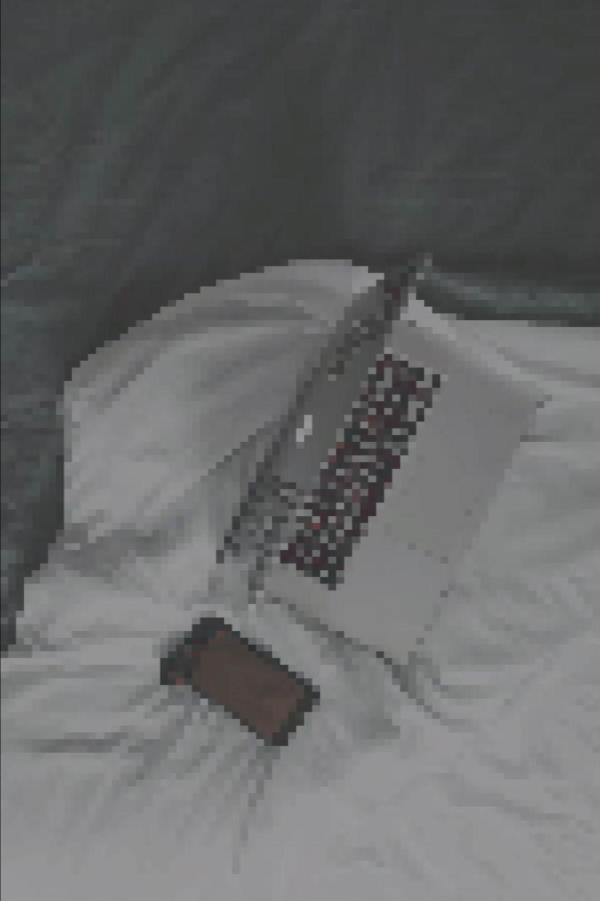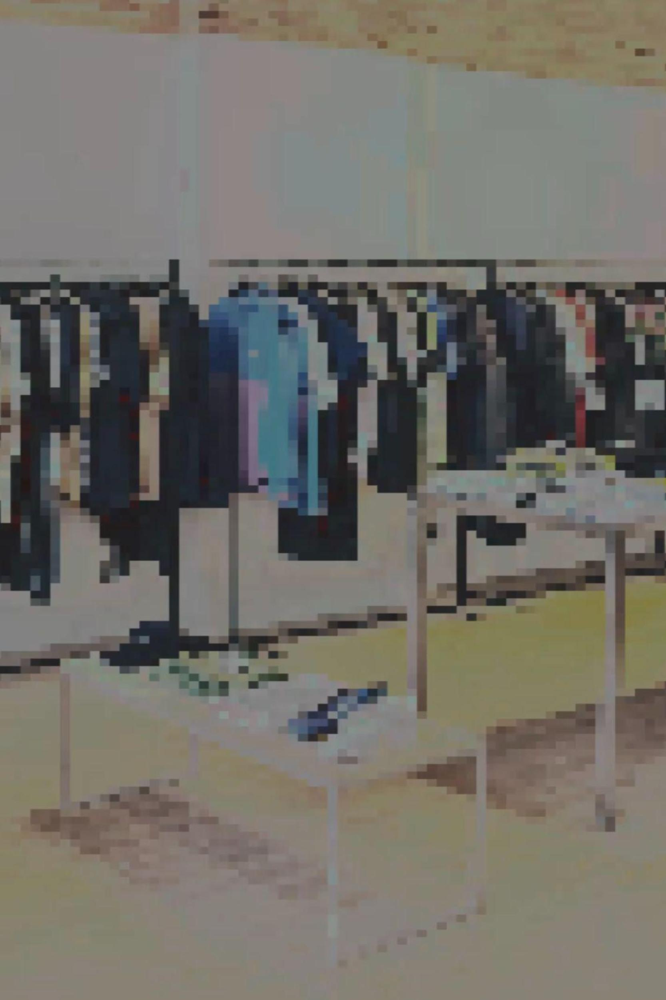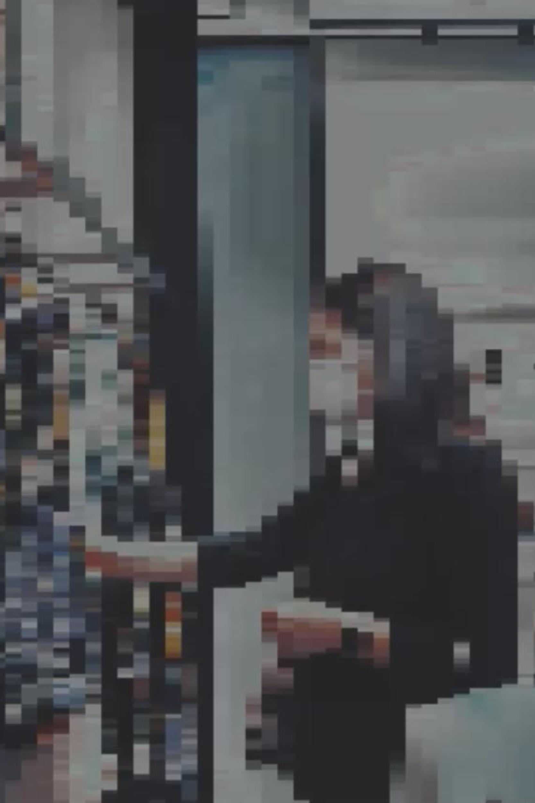
Final Layout